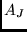
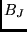
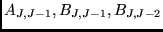
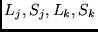
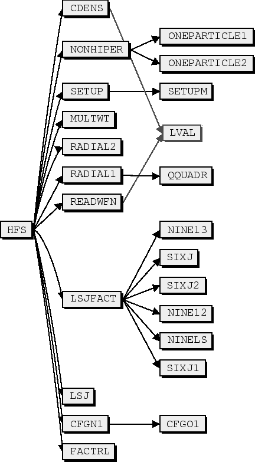

Next: ISO
Up: ATSP2K manual
Previous: BIOTR
Contents
Subsections
HFS
The atomic hyperfine splitting is determined by the hyperfine interaction
constant  and . In strong external magnetic fields,
the splitting is also affected by the off-diagonal hyperfine
constants
.
The hyperfine program computes the magnetic dipole and
electric quadrupole constants from MCHF wave functions.
The program requires that the orbitals of a single configuration
from the initial and final state to be mutually orthogonal.
The program structure is shown on Figure 7.37.
The configurations are analyzed for orthogonality (cfgn(), cfg01()).
factr() computes a table of logarithms of factorials.
readwt() reads the weight from .l or .j file. A number of
 and  dependent factors are determined
in lsjfact(). The wave functions are read in readwfn().
The one-electron active radial integrals are determined in radial1()
and radial2(). multwt() multiplies the weights of configuration
and . setup() transforms the occupation and coupling
for a configuration pair in a format suitable for use by tensor(),
which evaluates the reduced matrix element between arbitrarily LS
coupled configurations.
dependent factors are determined
in lsjfact(). The wave functions are read in readwfn().
The one-electron active radial integrals are determined in radial1()
and radial2(). multwt() multiplies the weights of configuration
and . setup() transforms the occupation and coupling
for a configuration pair in a format suitable for use by tensor(),
which evaluates the reduced matrix element between arbitrarily LS
coupled configurations.
Figure 7.37:
hfs program structure.
|  |
The user provides the following input data:
- Name of state
This program requires that the name of the sate, denoted
here as <name>, to be specified. The program expects
expects all data from <name>.c, <name>.w and either
of <name>.l, or <name>.j.
- Type
The following options are provided;
- only diagonal
 and
and  factors.
factors.
- both diagonal and off-diagonal and factors
- only the coefficients of the radial matrix elements
For the last option all needed input data is in the
configuration input file <name>.c .
- Hyperfine parameters
The hyperfine parameters
 and
and  can be printed out. (meaningful for pure LS terms).
can be printed out. (meaningful for pure LS terms).
- Input
The program can use wave function expansion from either an
MCHF or CI calculation.
- Number
Specifies the particular states for which the
and factors to be calculated (when <name>.j contains more
than one state).
- Print-out
In a calculation of the and factors,
values of the
 , and terms are
written to the file <name>.h. Full print-out prints the
values of coefficients and radial matrix elements as well as
the contribution to the different and factors
for every pair of configurations.
, and terms are
written to the file <name>.h. Full print-out prints the
values of coefficients and radial matrix elements as well as
the contribution to the different and factors
for every pair of configurations.
- Tolerance for printing
In the case of a full print-out it is possible to set
a tolerance for printing. If the contribution to a term is
less than the tolerance, then it will not be printed.
- Nuclear data
The user provides:

 in nuclear magnetons
in nuclear magnetons
 in barns
in barns
which are experimental values.
The input files are described in Chapter 13.16.
The output is written to a file <name>.h .
If a full print-out is requested, the program outputs the following data
from equations (46) and (47) for a pair of configurations and .
-

The values for which the matrix element has been calculated.
- Weight
The configuration weight  .
.
- Coeff
The coefficient coef .
.
- Radial matrix elements
Values of the radial matrix elements
 and
and

- A(MHz), B(MHz)
The contribution in MHz to the different and factors
from this pair of configurations.
Next: ISO
Up: ATSP2K manual
Previous: BIOTR
Contents
2001-10-11